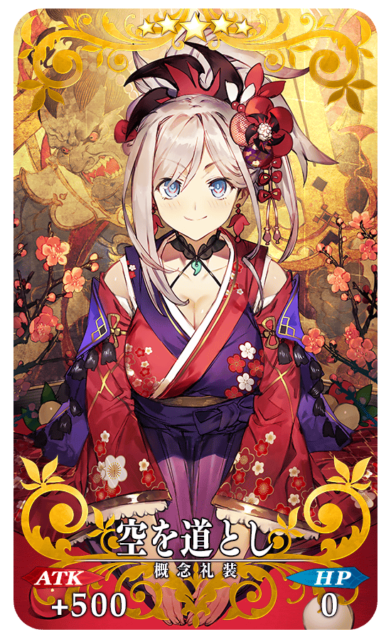
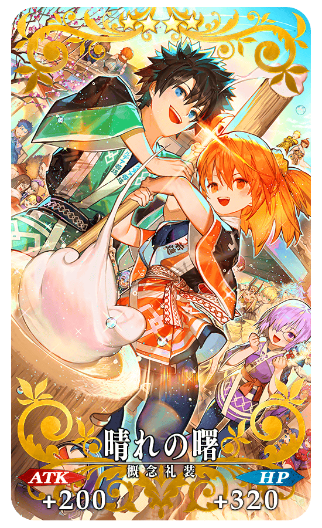
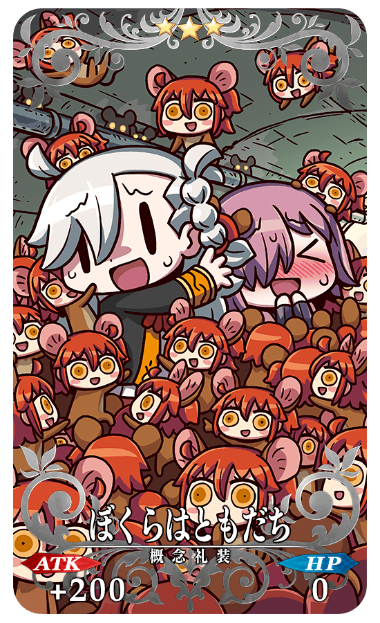
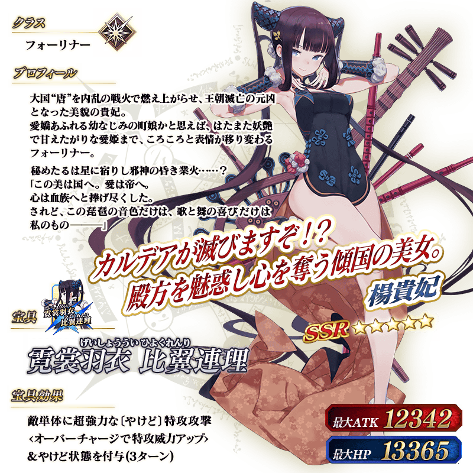
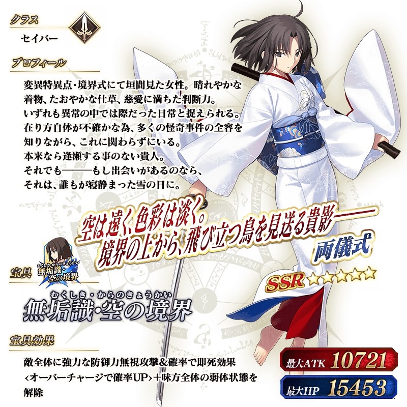
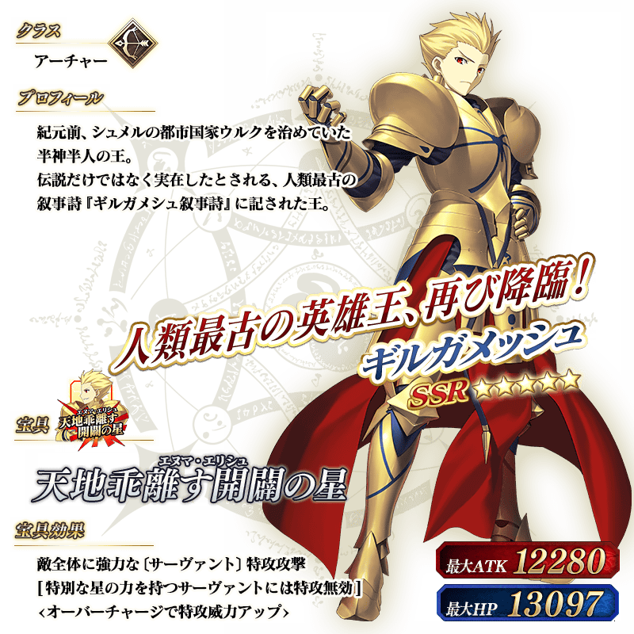
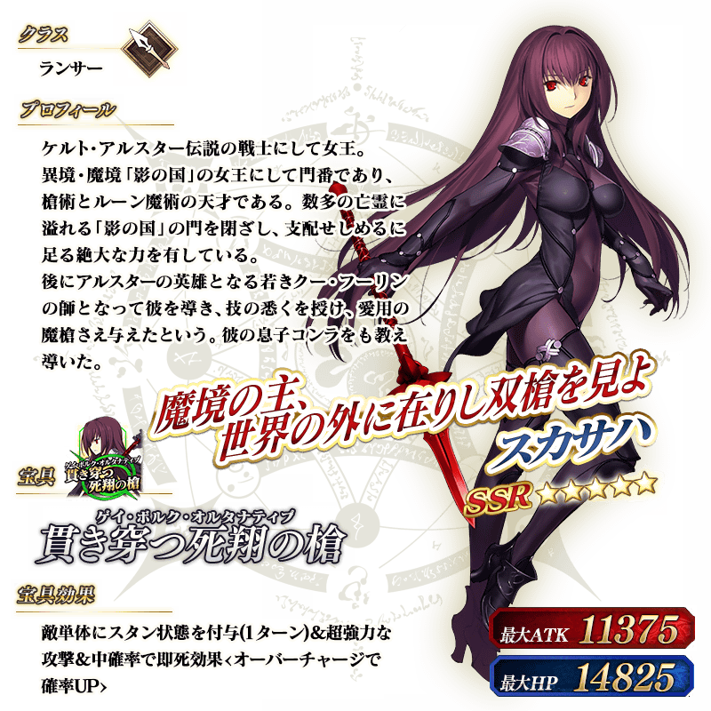
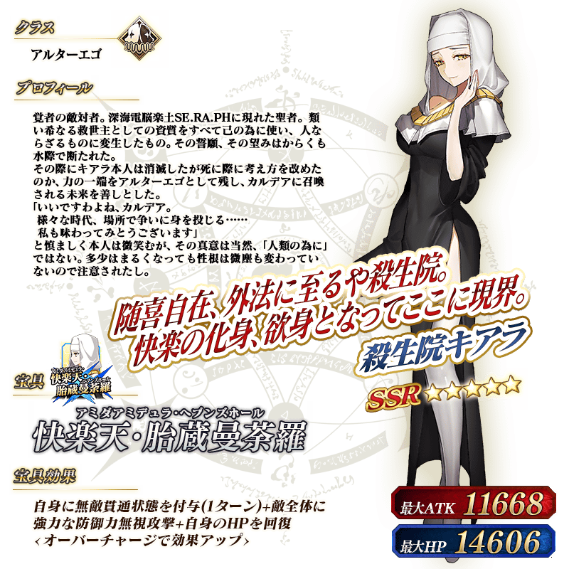

◆「New Year 2020 Pick Up召喚(每日交替)」期間◆
期間:2019年12月31日(二) 23:00～2020年1月15日(三) 11:59
期間限定「New Year 2020 Pick Up召喚(每日交替)」舉辦！
記念迎來2020年，期間限定從者「★5(SSR)楊貴妃」新登場！
本次包含上述Pick Up 7位的從者以每日交替Pick Up！
期間限定「★5(SSR)楊貴妃」「★5(SSR)兩儀式(Saber)」「★5(SSR)吉爾伽美什(Archer)」「★5(SSR)斯卡哈(Lancer)」「★5(SSR)始皇帝」「★5(SSR)殺生院祈荒」「★5(SSR)BB」以每日交替Pick Up！
「★5(SSR)空道とし」「★4(SR)晴れの曙」「★3(R)ぼくらはともだち」做為期間限定概念禮裝登場！
裝備上述3種概念禮裝的話，在期間限定活動「復刻:雀之旅社活動日誌～閻魔亭繁盛記～ 輕量版」中會提升活動道具的掉落獲得數。
Pick Up期間中，Pick Up對象從者與概念禮裝的出現機率提升！
詳情請在聖晶石召喚畫面左下的召喚詳細確認。
11次召喚中確定1張★4(SR)以上和確定1位★3(R)以上的從者！ ※確定★4(SR)以上包含從者和概念禮裝。 ※本頁面皆為開發中圖片。會有與實際圖片相異的情況。
◆有關從者的注意◆
※請注意「New Year 2020 Pick Up召喚(每日交替)」做為每日交替，「★5(SSR)楊貴妃」「★5(SSR)兩儀式(Saber)」「★5(SSR)吉爾伽美什(Archer)」「★5(SSR)斯卡哈(Lancer)」「★5(SSR)始皇帝」「★5(SSR)殺生院祈荒」「★5(SSR)BB」就算Pick Up期間中也會有不被抽出的日子。
※「★5(SSR)楊貴妃」「★5(SSR)兩儀式(Saber)」「★5(SSR)吉爾伽美什(Archer)」「★5(SSR)斯卡哈(Lancer)」「★5(SSR)始皇帝」「★5(SSR)殺生院祈荒」「★5(SSR)BB」在Pick Up期間結束後不會追加到故事召喚。
◆有關概念禮裝的注意◆
※請注意成為抽出對象期間限定概念禮裝只有「★5(SSR)空道とし」「★4(SR)晴れの曙」「★3(R)ぼくらはともだち」，其他的期間限定概念禮裝是被抽出對象外。
※「★3(R)ぼくらはともだち」在Pick Up期間中，也能靠友情點數召喚獲得。
※請注意自友情點數召喚抽出的「★3(R)ぼくらはともだち」在自動變還設定登錄★3(R)概念禮裝的情況，會變成自動變還的對象。
◆「New Year 2020 Pick Up召喚(每日交替)」Pick Up內容◆
| Pick Up期間 | 每日交替Pick Up | |
|---|---|---|
| 12/31(二) 23:00～1/1(三) 22:59 |

|
★5 楊貴妃 |
| 1/1(三) 23:00～1/2(四) 22:59 | ★5 兩儀式(Saber) | |
| 1/2(四) 23:00～1/3(五) 22:59 | ★5 始皇帝 | |
| 1/3(五) 23:00～1/4(六) 22:59 |

|
★5 吉爾伽美什(Archer) |
| 1/4(六) 23:00～1/5(日) 22:59 | ★5 斯卡哈(Lancer) | |
| 1/5(日) 23:00～1/6(一) 22:59 | ★5 BB | |
| 1/6(一) 23:00～1/7(二) 22:59 | ★5 殺生院祈荒 | |
| 1/7(二) 23:00～1/8(三) 22:59 |
|
★5 楊貴妃 |
| 1/8(三) 23:00～1/9(四) 22:59 | ★5 兩儀式(Saber) | |
| 1/9(四) 23:00～1/10(五) 22:59 | ★5 始皇帝 | |
| 1/10(五) 23:00～1/11(六) 22:59 |
|
★5 吉爾伽美什(Archer) |
| 1/11(六) 23:00～1/12(日) 22:59 | ★5 斯卡哈(Lancer) | |
| 1/12(日) 23:00～1/13(一) 22:59 | ★5 BB | |
| 1/13(一) 23:00～1/14(二) 22:59 | ★5 殺生院祈荒 | |
| 1/14(二) 23:00～1/15(三) 11:59 |
|
★5 楊貴妃 |
※請注意會以每日交替變更Pick Up的從者。
【1月3日(五) 17:00追記】
|  |
★★★★★SSR
|

|  |
★★★★SR
|

|  |
★★★R
|
 ※上述「★5(SSR)楊貴妃」的立繪為靈基再臨第2階段。

 ※上述「★5(SSR)吉爾伽美什(Archer)」的立繪為靈基再臨第2階段。
 ※上述「★5(SSR)斯卡哈(Lancer)」的立繪為靈基再臨第2階段。



※上述「★5(SSR)BB」的立繪為靈基再臨第2階段。

介紹「★5(SSR)楊貴妃」的寶具演出！
在「Fate/Grand Order」官方網站內的公告中，以影片公開寶具演出，敬請確認。
介紹「★5(SSR)兩儀式(Saber)」「★5(SSR)吉爾伽美什(Archer)」「★5(SSR)斯卡哈(Lancer)」「★5(SSR)始皇帝」「★5(SSR)殺生院祈荒」「★5(SSR)BB」的寶具演出！
在「Fate/Grand Order」官方網站內的公告中，以影片公開寶具演出，敬請確認。
其他還有，「2020年新年宣傳活動」和期間限定「福袋召喚2020(職階別)」同時舉辦！
關於詳情，請自下述橫幅確認。
■「2020年新年宣傳活動」詳細情報

■「福袋召喚2020(職階別)」詳細情報